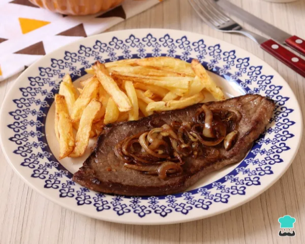
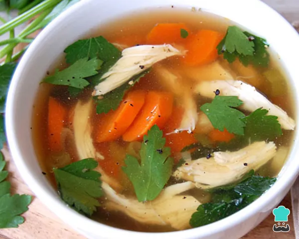

Bife acebolado com fritas
- 1 bife
- 1 cebola pequena
- 1 dente de alho
- 3 batatas pequenas
Bife acebolado com fritas é um clássico dos restaurantes e botecos do Brasil. E não é à toa: esse prato tão simples e delicioso fica perfeito com um arroz branco bem soltinho, uma salada, uma cerveja pra acompanhar... hhhmm!
Sopa de legumes com frango
- 1 peça de frango
- 1 cebola
- 2 cenouras
- 3 ramos de salsinha
Emagrecer com sopa é uma das melhores opções para quem quer emagrecer com saúde e de forma natural! Veja como fazer sopa de legumes com frango desfiado bem simples de preparar com ingredientes que todos temos em casa.
Arroz à grega tradicional

- 2 xícaras de arroz
- 1 dente de alho amassado
- 2 colheres de sopa de uva-passa
- 3 colheres de sopa de ervilha cozida
- 3 colheres de sopa de milho
O arroz à grega original é um prato com cara de festa, colorido e nutritivo. Ele é popular sobretudo como acompanhamento de ceia de Natal e ceia de Ano Novo, para servir no churrasco e mais.